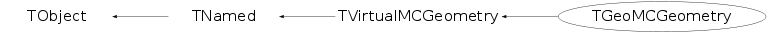

class TGeoMCGeometry: public TVirtualMCGeometry
Implementation of the TVirtualMCGeometry interface for building TGeo geometry.
Function Members (Methods)
public:
| TGeoMCGeometry() | |
| TGeoMCGeometry(const char* name, const char* title, Bool_t g3CompatibleVolumeNames = false) | |
| virtual | ~TGeoMCGeometry() |
| void | TObject::AbstractMethod(const char* method) const |
| virtual void | TObject::AppendPad(Option_t* option = "") |
| virtual void | TObject::Browse(TBrowser* b) |
| static TClass* | Class() |
| virtual const char* | TObject::ClassName() const |
| virtual void | TNamed::Clear(Option_t* option = "") |
| virtual TObject* | TNamed::Clone(const char* newname = "") const |
| virtual Int_t | TNamed::Compare(const TObject* obj) const |
| virtual void | TNamed::Copy(TObject& named) const |
| virtual void | TObject::Delete(Option_t* option = "")MENU |
| virtual Int_t | TObject::DistancetoPrimitive(Int_t px, Int_t py) |
| virtual void | TObject::Draw(Option_t* option = "") |
| virtual void | TObject::DrawClass() constMENU |
| virtual TObject* | TObject::DrawClone(Option_t* option = "") constMENU |
| virtual void | TObject::Dump() constMENU |
| virtual void | TObject::Error(const char* method, const char* msgfmt) const |
| virtual void | TObject::Execute(const char* method, const char* params, Int_t* error = 0) |
| virtual void | TObject::Execute(TMethod* method, TObjArray* params, Int_t* error = 0) |
| virtual void | TObject::ExecuteEvent(Int_t event, Int_t px, Int_t py) |
| virtual void | TObject::Fatal(const char* method, const char* msgfmt) const |
| virtual void | TNamed::FillBuffer(char*& buffer) |
| virtual TObject* | TObject::FindObject(const char* name) const |
| virtual TObject* | TObject::FindObject(const TObject* obj) const |
| virtual Option_t* | TObject::GetDrawOption() const |
| static Long_t | TObject::GetDtorOnly() |
| virtual const char* | TObject::GetIconName() const |
| virtual Bool_t | GetMaterial(const TString& volumeName, TString& name, Int_t& imat, Double_t& a, Double_t& z, Double_t& density, Double_t& radl, Double_t& inter, TArrayD& par) |
| virtual Bool_t | GetMedium(const TString& volumeName, TString& name, Int_t& imed, Int_t& nmat, Int_t& isvol, Int_t& ifield, Double_t& fieldm, Double_t& tmaxfd, Double_t& stemax, Double_t& deemax, Double_t& epsil, Double_t& stmin, TArrayD& par) |
| virtual const char* | TNamed::GetName() const |
| virtual char* | TObject::GetObjectInfo(Int_t px, Int_t py) const |
| static Bool_t | TObject::GetObjectStat() |
| virtual Option_t* | TObject::GetOption() const |
| virtual Bool_t | GetShape(const TString& volumePath, TString& shapeType, TArrayD& par) |
| virtual const char* | TNamed::GetTitle() const |
| virtual Bool_t | GetTransformation(const TString& volumePath, TGeoHMatrix& matrix) |
| virtual UInt_t | TObject::GetUniqueID() const |
| virtual void | Gsbool(const char*, const char*) |
| virtual void | Gsdvn(const char* name, const char* mother, Int_t ndiv, Int_t iaxis) |
| virtual void | Gsdvn2(const char* name, const char* mother, Int_t ndiv, Int_t iaxis, Double_t c0i, Int_t numed) |
| virtual void | Gsdvt(const char* name, const char* mother, Double_t step, Int_t iaxis, Int_t numed, Int_t ndvmx) |
| virtual void | Gsdvt2(const char* name, const char* mother, Double_t step, Int_t iaxis, Double_t c0, Int_t numed, Int_t ndvmx) |
| virtual void | Gsord(const char* name, Int_t iax) |
| virtual void | Gspos(const char* name, Int_t nr, const char* mother, Double_t x, Double_t y, Double_t z, Int_t irot, const char* konly) |
| virtual void | Gsposp(const char* name, Int_t nr, const char* mother, Double_t x, Double_t y, Double_t z, Int_t irot, const char* konly, Float_t* upar, Int_t np) |
| virtual void | Gsposp(const char* name, Int_t nr, const char* mother, Double_t x, Double_t y, Double_t z, Int_t irot, const char* konly, Double_t* upar, Int_t np) |
| virtual Int_t | Gsvolu(const char* name, const char* shape, Int_t nmed, Float_t* upar, Int_t np) |
| virtual Int_t | Gsvolu(const char* name, const char* shape, Int_t nmed, Double_t* upar, Int_t np) |
| virtual Bool_t | TObject::HandleTimer(TTimer* timer) |
| virtual ULong_t | TNamed::Hash() const |
| virtual void | TObject::Info(const char* method, const char* msgfmt) const |
| virtual Bool_t | TObject::InheritsFrom(const char* classname) const |
| virtual Bool_t | TObject::InheritsFrom(const TClass* cl) const |
| virtual void | TObject::Inspect() constMENU |
| void | TObject::InvertBit(UInt_t f) |
| virtual TClass* | IsA() const |
| virtual Bool_t | TObject::IsEqual(const TObject* obj) const |
| virtual Bool_t | TObject::IsFolder() const |
| Bool_t | TObject::IsOnHeap() const |
| virtual Bool_t | TNamed::IsSortable() const |
| Bool_t | TObject::IsZombie() const |
| virtual void | TNamed::ls(Option_t* option = "") const |
| virtual void | Material(Int_t& kmat, const char* name, Double_t a, Double_t z, Double_t dens, Double_t radl, Double_t absl, Float_t* buf, Int_t nwbuf) |
| virtual void | Material(Int_t& kmat, const char* name, Double_t a, Double_t z, Double_t dens, Double_t radl, Double_t absl, Double_t* buf, Int_t nwbuf) |
| virtual void | Matrix(Int_t& krot, Double_t thetaX, Double_t phiX, Double_t thetaY, Double_t phiY, Double_t thetaZ, Double_t phiZ) |
| void | TObject::MayNotUse(const char* method) const |
| virtual void | Medium(Int_t& kmed, const char* name, Int_t nmat, Int_t isvol, Int_t ifield, Double_t fieldm, Double_t tmaxfd, Double_t stemax, Double_t deemax, Double_t epsil, Double_t stmin, Float_t* ubuf, Int_t nbuf) |
| virtual void | Medium(Int_t& kmed, const char* name, Int_t nmat, Int_t isvol, Int_t ifield, Double_t fieldm, Double_t tmaxfd, Double_t stemax, Double_t deemax, Double_t epsil, Double_t stmin, Double_t* ubuf, Int_t nbuf) |
| virtual Int_t | MediumId(const char* mediumName) const |
| virtual void | Mixture(Int_t& kmat, const char* name, Float_t* a, Float_t* z, Double_t dens, Int_t nlmat, Float_t* wmat) |
| virtual void | Mixture(Int_t& kmat, const char* name, Double_t* a, Double_t* z, Double_t dens, Int_t nlmat, Double_t* wmat) |
| virtual Int_t | NofVolDaughters(const char* volName) const |
| virtual Int_t | NofVolumes() const |
| virtual Bool_t | TObject::Notify() |
| void | TObject::Obsolete(const char* method, const char* asOfVers, const char* removedFromVers) const |
| static void | TObject::operator delete(void* ptr) |
| static void | TObject::operator delete(void* ptr, void* vp) |
| static void | TObject::operator delete[](void* ptr) |
| static void | TObject::operator delete[](void* ptr, void* vp) |
| void* | TObject::operator new(size_t sz) |
| void* | TObject::operator new(size_t sz, void* vp) |
| void* | TObject::operator new[](size_t sz) |
| void* | TObject::operator new[](size_t sz, void* vp) |
| virtual void | TObject::Paint(Option_t* option = "") |
| virtual void | TObject::Pop() |
| virtual void | TNamed::Print(Option_t* option = "") const |
| virtual Int_t | TObject::Read(const char* name) |
| virtual void | TObject::RecursiveRemove(TObject* obj) |
| void | TObject::ResetBit(UInt_t f) |
| virtual void | TObject::SaveAs(const char* filename = "", Option_t* option = "") constMENU |
| virtual void | TObject::SavePrimitive(ostream& out, Option_t* option = "") |
| void | TObject::SetBit(UInt_t f) |
| void | TObject::SetBit(UInt_t f, Bool_t set) |
| virtual void | TObject::SetDrawOption(Option_t* option = "")MENU |
| static void | TObject::SetDtorOnly(void* obj) |
| virtual void | TNamed::SetName(const char* name)MENU |
| virtual void | TNamed::SetNameTitle(const char* name, const char* title) |
| static void | TObject::SetObjectStat(Bool_t stat) |
| virtual void | TNamed::SetTitle(const char* title = "")MENU |
| virtual void | TObject::SetUniqueID(UInt_t uid) |
| virtual void | ShowMembers(TMemberInspector& insp) |
| virtual Int_t | TNamed::Sizeof() const |
| virtual void | Streamer(TBuffer& b) |
| void | StreamerNVirtual(TBuffer& b) |
| virtual void | TObject::SysError(const char* method, const char* msgfmt) const |
| Bool_t | TObject::TestBit(UInt_t f) const |
| Int_t | TObject::TestBits(UInt_t f) const |
| virtual void | TObject::UseCurrentStyle() |
| virtual Int_t | VolDaughterCopyNo(const char* volName, Int_t i) const |
| virtual const char* | VolDaughterName(const char* volName, Int_t i) const |
| virtual Int_t | VolId(const char* volName) const |
| virtual Int_t | VolId2Mate(Int_t id) const |
| virtual const char* | VolName(Int_t id) const |
| virtual void | TObject::Warning(const char* method, const char* msgfmt) const |
| virtual Int_t | TObject::Write(const char* name = 0, Int_t option = 0, Int_t bufsize = 0) |
| virtual Int_t | TObject::Write(const char* name = 0, Int_t option = 0, Int_t bufsize = 0) const |
protected:
| virtual void | TObject::DoError(int level, const char* location, const char* fmt, va_list va) const |
| void | TObject::MakeZombie() |
private:
| TGeoMCGeometry(const TGeoMCGeometry&) | |
| Double_t* | CreateDoubleArray(Float_t* array, Int_t size) const |
| TGeoManager* | GetTGeoManager() const |
| TGeoMCGeometry& | operator=(const TGeoMCGeometry&) |
| void | Vname(const char* name, char* vname) const |
Data Members
public:
| enum TObject::EStatusBits { | kCanDelete | |
| kMustCleanup | ||
| kObjInCanvas | ||
| kIsReferenced | ||
| kHasUUID | ||
| kCannotPick | ||
| kNoContextMenu | ||
| kInvalidObject | ||
| }; | ||
| enum TObject::[unnamed] { | kIsOnHeap | |
| kNotDeleted | ||
| kZombie | ||
| kBitMask | ||
| kSingleKey | ||
| kOverwrite | ||
| kWriteDelete | ||
| }; |
protected:
| TString | TNamed::fName | object identifier |
| TString | TNamed::fTitle | object title |
private:
| Bool_t | fG3CompatibleVolumeNames | option to convert volumes names to |
| static TGeoMCGeometry* | fgInstance | singleton instance |
Class Charts
{kind=link}
{kind=link}
{kind=link}
{kind=link}

Function documentation
TGeoMCGeometry(const char* name, const char* title, Bool_t g3CompatibleVolumeNames = false)
Standard constructor
TGeoManager* GetTGeoManager() const
Return TGeoManager global pointer. Create a new TGeoManager object if it does not yet exist.
Double_t* CreateDoubleArray(Float_t* array, Int_t size) const
void Vname(const char* name, char* vname) const
convert name to upper case. Make vname at least 4 chars
void Material(Int_t& kmat, const char* name, Double_t a, Double_t z, Double_t dens, Double_t radl, Double_t absl, Float_t* buf, Int_t nwbuf)
Defines a Material kmat number assigned to the material name material name a atomic mass in au z atomic number dens density in g/cm3 absl absorbtion length in cm if >=0 it is ignored and the program calculates it, if <0. -absl is taken radl radiation length in cm if >=0 it is ignored and the program calculates it, if <0. -radl is taken buf pointer to an array of user words nbuf number of user words
void Material(Int_t& kmat, const char* name, Double_t a, Double_t z, Double_t dens, Double_t radl, Double_t absl, Double_t* buf, Int_t nwbuf)
Defines a Material kmat number assigned to the material name material name a atomic mass in au z atomic number dens density in g/cm3 absl absorbtion length in cm if >=0 it is ignored and the program calculates it, if <0. -absl is taken radl radiation length in cm if >=0 it is ignored and the program calculates it, if <0. -radl is taken buf pointer to an array of user words nbuf number of user words
void Mixture(Int_t& kmat, const char* name, Float_t* a, Float_t* z, Double_t dens, Int_t nlmat, Float_t* wmat)
Defines mixture OR COMPOUND IMAT as composed by THE BASIC NLMAT materials defined by arrays A,Z and WMAT If NLMAT > 0 then wmat contains the proportion by weights of each basic material in the mixture. If nlmat < 0 then WMAT contains the number of atoms of a given kind into the molecule of the COMPOUND In this case, WMAT in output is changed to relative weigths.
void Mixture(Int_t& kmat, const char* name, Double_t* a, Double_t* z, Double_t dens, Int_t nlmat, Double_t* wmat)
Defines mixture OR COMPOUND IMAT as composed by THE BASIC NLMAT materials defined by arrays A,Z and WMAT If NLMAT > 0 then wmat contains the proportion by weights of each basic material in the mixture. If nlmat < 0 then WMAT contains the number of atoms of a given kind into the molecule of the COMPOUND In this case, WMAT in output is changed to relative weigths.
void Medium(Int_t& kmed, const char* name, Int_t nmat, Int_t isvol, Int_t ifield, Double_t fieldm, Double_t tmaxfd, Double_t stemax, Double_t deemax, Double_t epsil, Double_t stmin, Float_t* ubuf, Int_t nbuf)
kmed tracking medium number assigned name tracking medium name nmat material number isvol sensitive volume flag ifield magnetic field fieldm max. field value (kilogauss) tmaxfd max. angle due to field (deg/step) stemax max. step allowed deemax max. fraction of energy lost in a step epsil tracking precision (cm) stmin min. step due to continuous processes (cm) ifield = 0 if no magnetic field; ifield = -1 if user decision in guswim; ifield = 1 if tracking performed with g3rkuta; ifield = 2 if tracking performed with g3helix; ifield = 3 if tracking performed with g3helx3.
void Medium(Int_t& kmed, const char* name, Int_t nmat, Int_t isvol, Int_t ifield, Double_t fieldm, Double_t tmaxfd, Double_t stemax, Double_t deemax, Double_t epsil, Double_t stmin, Double_t* ubuf, Int_t nbuf)
kmed tracking medium number assigned name tracking medium name nmat material number isvol sensitive volume flag ifield magnetic field fieldm max. field value (kilogauss) tmaxfd max. angle due to field (deg/step) stemax max. step allowed deemax max. fraction of energy lost in a step epsil tracking precision (cm) stmin min. step due to continuos processes (cm) ifield = 0 if no magnetic field; ifield = -1 if user decision in guswim; ifield = 1 if tracking performed with g3rkuta; ifield = 2 if tracking performed with g3helix; ifield = 3 if tracking performed with g3helx3.
void Matrix(Int_t& krot, Double_t thetaX, Double_t phiX, Double_t thetaY, Double_t phiY, Double_t thetaZ, Double_t phiZ)
krot rotation matrix number assigned theta1 polar angle for axis i phi1 azimuthal angle for axis i theta2 polar angle for axis ii phi2 azimuthal angle for axis ii theta3 polar angle for axis iii phi3 azimuthal angle for axis iii it defines the rotation matrix number irot.
Int_t Gsvolu(const char* name, const char* shape, Int_t nmed, Float_t* upar, Int_t np)
NAME Volume name SHAPE Volume type NUMED Tracking medium number NPAR Number of shape parameters UPAR Vector containing shape parameters It creates a new volume in the JVOLUM data structure.
Int_t Gsvolu(const char* name, const char* shape, Int_t nmed, Double_t* upar, Int_t np)
NAME Volume name SHAPE Volume type NUMED Tracking medium number NPAR Number of shape parameters UPAR Vector containing shape parameters It creates a new volume in the JVOLUM data structure.
void Gsdvn(const char* name, const char* mother, Int_t ndiv, Int_t iaxis)
Create a new volume by dividing an existing one NAME Volume name MOTHER Mother volume name NDIV Number of divisions IAXIS Axis value X,Y,Z of CAXIS will be translated to 1,2,3 for IAXIS. It divides a previously defined volume.
void Gsdvn2(const char* name, const char* mother, Int_t ndiv, Int_t iaxis, Double_t c0i, Int_t numed)
Create a new volume by dividing an existing one Divides mother into ndiv divisions called name along axis iaxis starting at coordinate value c0. the new volume created will be medium number numed.
void Gsdvt(const char* name, const char* mother, Double_t step, Int_t iaxis, Int_t numed, Int_t ndvmx)
Create a new volume by dividing an existing one
Divides MOTHER into divisions called NAME along
axis IAXIS in steps of STEP. If not exactly divisible
will make as many as possible and will centre them
with respect to the mother. Divisions will have medium
number NUMED. If NUMED is 0, NUMED of MOTHER is taken.
NDVMX is the expected maximum number of divisions
(If 0, no protection tests are performed)
void Gsdvt2(const char* name, const char* mother, Double_t step, Int_t iaxis, Double_t c0, Int_t numed, Int_t ndvmx)
Create a new volume by dividing an existing one
Divides MOTHER into divisions called NAME along
axis IAXIS starting at coordinate value C0 with step
size STEP.
The new volume created will have medium number NUMED.
If NUMED is 0, NUMED of mother is taken.
NDVMX is the expected maximum number of divisions
(If 0, no protection tests are performed)
void Gsord(const char* name, Int_t iax)
Flags volume CHNAME whose contents will have to be ordered
along axis IAX, by setting the search flag to -IAX
IAX = 1 X axis
IAX = 2 Y axis
IAX = 3 Z axis
IAX = 4 Rxy (static ordering only -> GTMEDI)
IAX = 14 Rxy (also dynamic ordering -> GTNEXT)
IAX = 5 Rxyz (static ordering only -> GTMEDI)
IAX = 15 Rxyz (also dynamic ordering -> GTNEXT)
IAX = 6 PHI (PHI=0 => X axis)
IAX = 7 THETA (THETA=0 => Z axis)
void Gspos(const char* name, Int_t nr, const char* mother, Double_t x, Double_t y, Double_t z, Int_t irot, const char* konly)
Position a volume into an existing one NAME Volume name NUMBER Copy number of the volume MOTHER Mother volume name X X coord. of the volume in mother ref. sys. Y Y coord. of the volume in mother ref. sys. Z Z coord. of the volume in mother ref. sys. IROT Rotation matrix number w.r.t. mother ref. sys. ONLY ONLY/MANY flag It positions a previously defined volume in the mother.
void Gsposp(const char* name, Int_t nr, const char* mother, Double_t x, Double_t y, Double_t z, Int_t irot, const char* konly, Float_t* upar, Int_t np)
Place a copy of generic volume NAME with user number
NR inside MOTHER, with its parameters UPAR(1..NP)
void Gsposp(const char* name, Int_t nr, const char* mother, Double_t x, Double_t y, Double_t z, Int_t irot, const char* konly, Double_t* upar, Int_t np)
Place a copy of generic volume NAME with user number
NR inside MOTHER, with its parameters UPAR(1..NP)
Int_t NofVolDaughters(const char* volName) const
Return number of daughters of the volume specified by volName According to A. Morsch' G3toRoot class (by A. Morsch)
const char* VolDaughterName(const char* volName, Int_t i) const
Return the name of i-th daughters of the volume specified by volName According to A. Morsch' G3toRoot class.
Int_t VolDaughterCopyNo(const char* volName, Int_t i) const
Return the copyNo of i-th daughters of the volume specified by volName According to A. Morsch' G3toRoot class.
Bool_t GetTransformation(const TString& volumePath, TGeoHMatrix& matrix)
Returns the Transformation matrix between the volume specified by the path volumePath and the Top or mater volume. The format of the path volumePath is as follows (assuming ALIC is the Top volume) "/ALIC_1/DDIP_1/S05I_2/S05H_1/S05G_3". Here ALIC is the top most or master volume which has only 1 instance of. Of all of the daughter volumes of ALICE, DDIP volume copy #1 is indicated. Similarly for the daughter volume of DDIP is S05I copy #2 and so on. Inputs: TString& volumePath The volume path to the specific volume for which you want the matrix. Volume name hierarchy is separated by "/" while the copy number is appended using a "_". Outputs: TGeoHMatrix &mat A matrix with its values set to those appropriate to the Local to Master transformation Return: A logical value if kFALSE then an error occurred and no change to mat was made.
Bool_t GetShape(const TString& volumePath, TString& shapeType, TArrayD& par)
Returns the shape and its parameters for the volume specified by volumeName. Inputs: TString& volumeName The volume name Outputs: TString &shapeType Shape type TArrayD &par A TArrayD of parameters with all of the parameters of the specified shape. Return: A logical indicating whether there was an error in getting this information
Bool_t GetMaterial(const TString& volumeName, TString& name, Int_t& imat, Double_t& a, Double_t& z, Double_t& density, Double_t& radl, Double_t& inter, TArrayD& par)
Returns the Material and its parameters for the volume specified by volumeName. Note, Geant3 stores and uses mixtures as an element with an effective Z and A. Consequently, if the parameter Z is not integer, then this material represents some sort of mixture. Inputs: TString& volumeName The volume name Outputs: TSrting &name Material name Int_t &imat Material index number Double_t &a Average Atomic mass of material Double_t &z Average Atomic number of material Double_t &dens Density of material [g/cm^3] Double_t &radl Average radiation length of material [cm] Double_t &inter Average interaction length of material [cm] TArrayD &par A TArrayD of user defined parameters. Return: kTRUE if no errors
Bool_t GetMedium(const TString& volumeName, TString& name, Int_t& imed, Int_t& nmat, Int_t& isvol, Int_t& ifield, Double_t& fieldm, Double_t& tmaxfd, Double_t& stemax, Double_t& deemax, Double_t& epsil, Double_t& stmin, TArrayD& par)
Returns the Medium and its parameters for the volume specified by volumeName. Inputs: TString& volumeName The volume name. Outputs: TString &name Medium name Int_t &nmat Material number defined for this medium Int_t &imed The medium index number Int_t &isvol volume number defined for this medium Int_t &iflield Magnetic field flag Double_t &fieldm Magnetic field strength Double_t &tmaxfd Maximum angle of deflection per step Double_t &stemax Maximum step size Double_t &deemax Maximum fraction of energy allowed to be lost to continuous process. Double_t &epsil Boundary crossing precision Double_t &stmin Minimum step size allowed TArrayD &par A TArrayD of user parameters with all of the parameters of the specified medium. Return: kTRUE if there where no errors
TGeoMCGeometry(const char* name, const char* title, Bool_t g3CompatibleVolumeNames = false)
TGeoMCGeometry& operator=(const TGeoMCGeometry& )